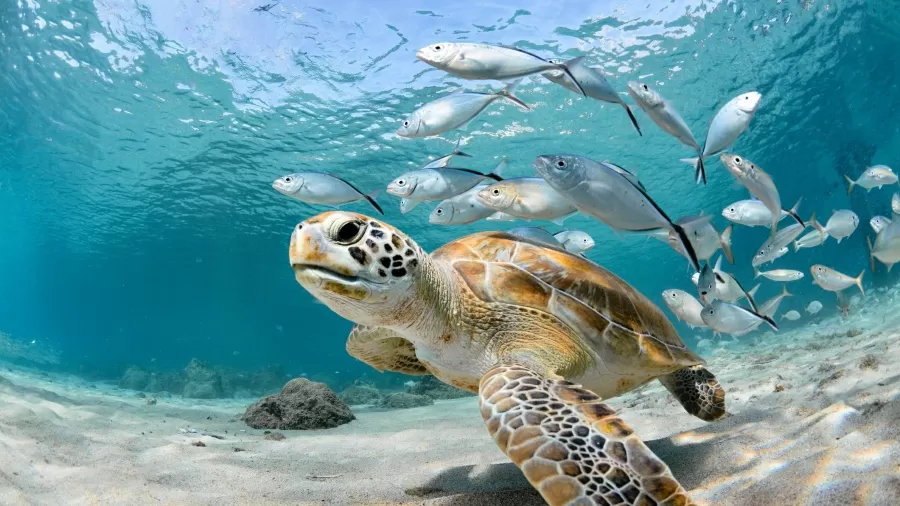
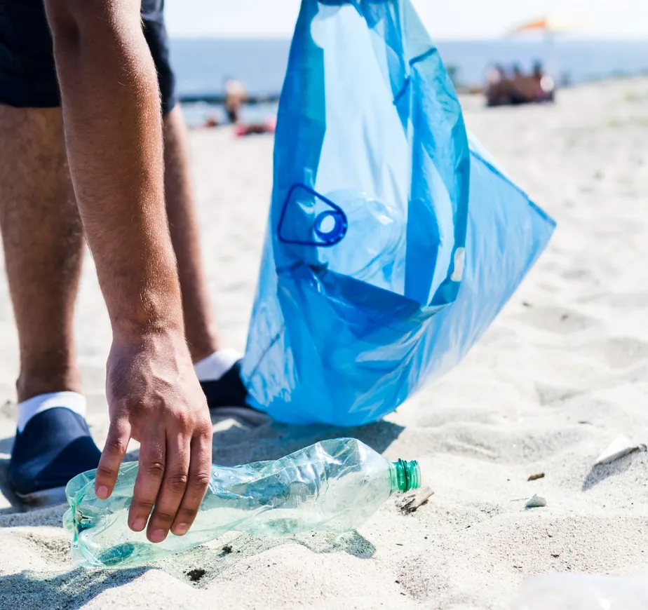
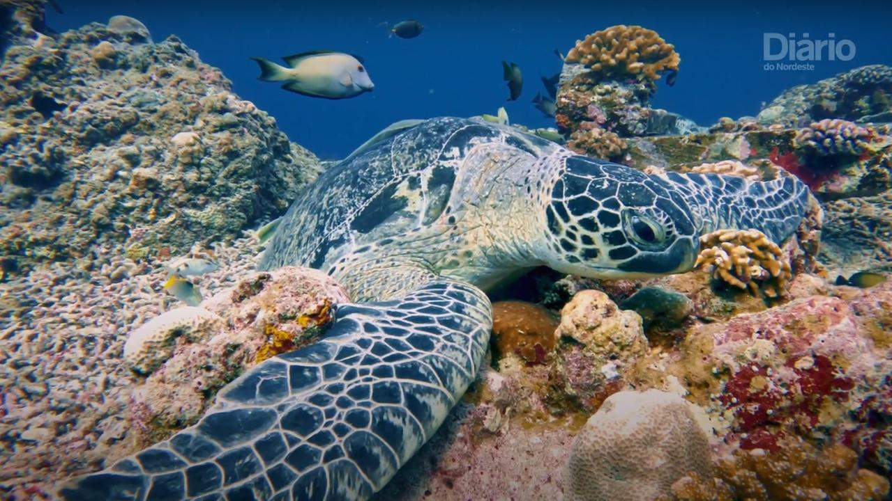
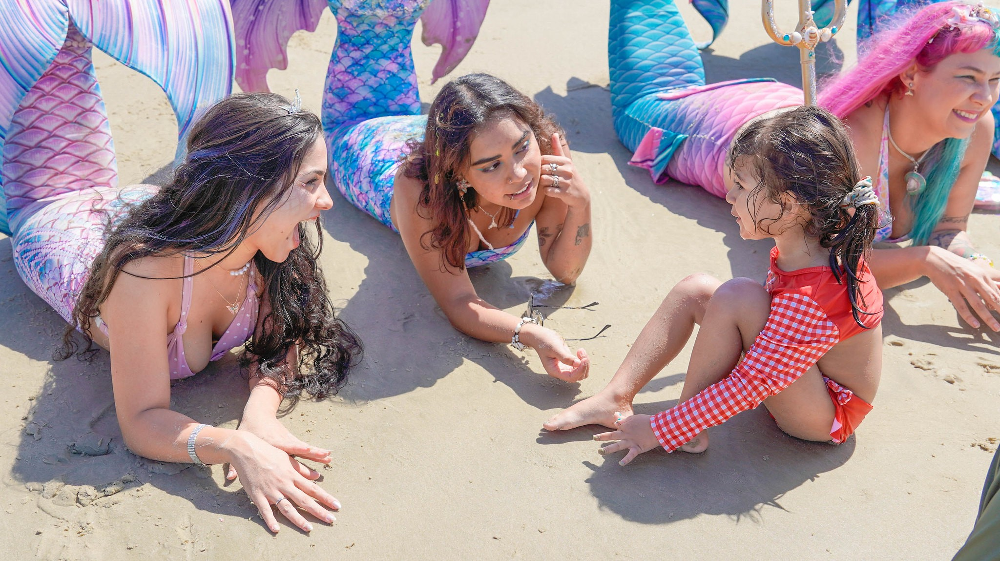

| Newsletter
- Acompanhe as principais notícias sobre a preservação dos oceanos!

Como o histórico Tratado de Proteção do Alto-Mar vai preservar quase metade da superfície da Terra
Fonte: www.uol.com.br

Limpeza dos oceanos: entenda a importância de preservar o litoral em SC
Fonte: www.g1.com.br

Entenda como a qualidade do ar influencia a vida nos oceanos
Fonte: www.diariodonordeste.com.br

Sereias, tritões e voluntários incentivam a preservação de praias e oceanos, em Guarujá
Fonte: www.guaruja.sp.gov.br

200 países fecham acordo histórico para proteger a vida marinha
Fonte: https://www.sonoticiaboa.com.br